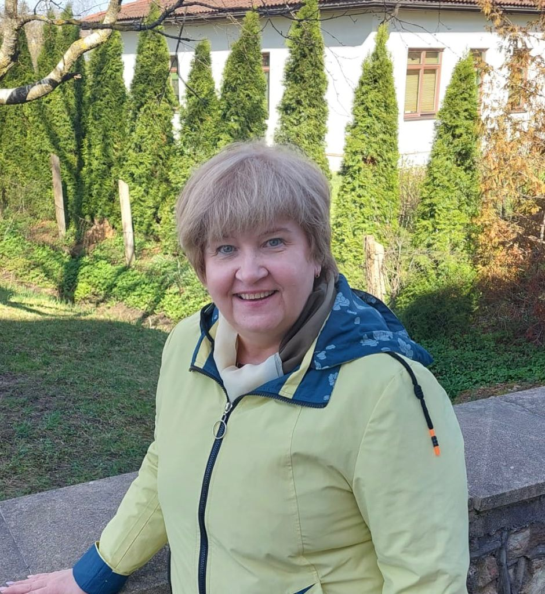

"Es varu, man viss izdosies!"
Strādā Siguldas pilsētas vidusskolā no 2011.gada
Intervētāja Sabīne Čākure
Cik gadus jūs strādājat šajā skolā?
Skola svin 15 gadu jubileju, un es šajā ēkā strādāju gandrīz visu šo laiku — tuvu pie 30 gadiem.
Kāpēc tieši izvēlējāties strādāt Siguldas pilsētas vidusskolā?
Tajā brīdī šeit bija vakance. Toreiz tā vēl nebija Siguldas pilsētas vidusskola — vienkārši pilsētas vidusskola. Skolā bija vajadzīga skolotāja pirmajai klasei, un mani iedrošināja direktors Jēkabsons. Vienkārši tā sanāca.
Kas jums visvairāk patīk skolotājas darbā?
Laikam jau komunikācija ar jauniešiem. Tas azarts, ko var iegūt no lielākās daļas skolēnu. Protams, ir arī tādi, kuri šo azartu nedod, jo negrib neko darīt, un tas savukārt apbēdina. Taču man patīk izaicinājums — tu nekad nezini, kā stunda sāksies, kā tā beigsies un kādas situācijas radīsies klases audzināšanā.
Kā jūs skaidrojat sarežģītas tēmas, lai visi tās saprastu?
Es mēģinu visu sasaistīt ar ikdienas dzīvi un iznest ārpus matemātikas robežām. Daudziem šķiet, ka matemātika ir tikai tas, kas ierakstīts kladē. Piemēram, stāstot par proporcijām, es runāju par keksiņu cepšanu — vai tu cep trim cilvēkiem vai visai klasei. Tā ir tīra matemātika un proporcijas. Man šķiet, ka tad skolēniem kļūst vieglāk saprast.
Vai jums šķiet, ka humora izmantošana stundās ir svarīga?
Es domāju, ka jā.
Vai, jūsuprāt, visiem var padoties matemātika?
Domāju, ka jā — pamatu līmenī noteikti visiem. Darbā tas man ir pierādījies. Ir bērni, kuriem viss padodas ļoti dabiski, bet citiem jāiegulda vairāk darba. Tā ir visos priekšmetos. Matemātika, kā es saku, ir kā kārtainā kūka — ja vienu kārtu neuztaisi, pēc tam jāiegulda daudz vairāk darba. Ja skolēns cenšas un turpina "būvēt šo kūku", tad viss izdodas. Esmu satikusi jauniešus, kuriem vidusskolā matemātika sagādāja grūtības, bet tagad viņi risina sarežģītus uzdevumus un studē augstskolās.
Kādas papildu prasmes skolēni apgūst jūsu stundās, izņemot matemātiku?
Man ir grūti pateikt, bet gribētos cerēt, ka bērni iemācās saprast vienu svarīgu lietu — matemātika māca domāt secīgi. Nevis histēriski skraidīt pa māju un kārtot istabu, bet izdomāt, kā to izdarīt ērti un ātri. Dari visu secīgi! Man šķiet, ka prasme plānot ir viens no matemātikas blakusproduktiem.
Kāds ir bijis smieklīgākais gadījums stundu laikā?
Tādu ir bijis ļoti daudz. Dažreiz puse no pateikta teikuma tiek pārprasta un iegūst joku formu. Tad skolēni kaut ko papildina, visa klase sāk smieties, un rodas humors. Visbiežāk tās ir situācijas, kad skolēni mani pārprot vai es nepabeidzu domu līdz galam.
Vai, jūsuprāt, mākslīgais intelekts var aizstāt skolotājus?
Domāju, ka ar to ir jārēķinās — tas jau ir mūsu ikdienā. Katrs bērns mācās citādi. Kā skolotāja es stundā varu piedāvāt trīs dažādus skaidrošanas veidus, bet, ja kādam ar to nepietiek, iespējams, viņam palīdzēs mākslīgais intelekts vai kāds cits digitālais rīks. Mēs nevaram simtprocentīgi pielāgoties visiem.
Kā iemācīt skolēnam nebaidīties kļūdīties?
Ar mēģināšanu. Ja es pasaku, ka esi kļūdījies, tas nenozīmē, ka tu esi slikts vai nekam nederīgs. Domāju, ka nebaidīties kļūdīties cilvēks mācās jau bērnībā. Kad bērns nokrīt, mamma viņu paceļ, nopurina un samīļo, nevis rada drāmu. Tieši tāpat ir arī mācībās.
Ko jūs novēlētu nākamajām paaudzēm?
Noteikti izmantot visas savas iespējas un sākt ar vārdiem: "Es varu, man viss izdosies!", nevis: "Es nevaru."
SĀKUMS